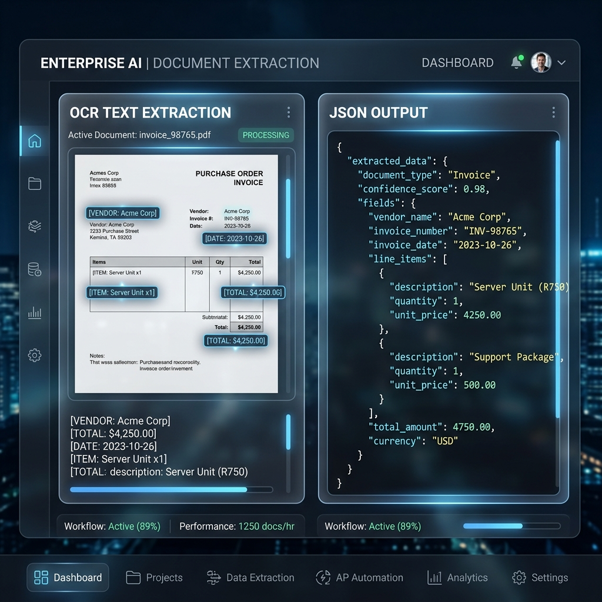
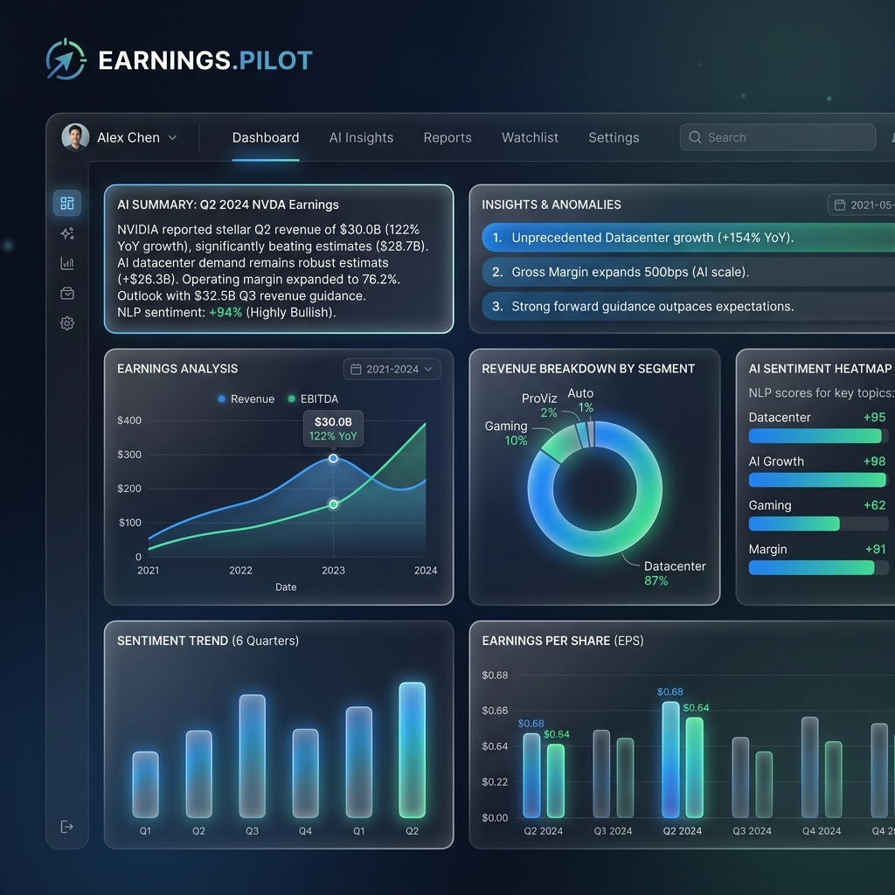

I am an AI Engineer and Python Developer passionate about building intelligent software that solves practical business problems. My work spans Generative AI, Computer Vision, OCR pipelines, Data Analytics, and backend development. I enjoy transforming complex workflows into scalable, production-ready solutions using Python, FastAPI, Azure OpenAI, SQL, and modern AI technologies.
During my internship at Tata Consultancy Services, I developed AI-powered applications, collaborated with engineering teams, and contributed to projects involving automation and enterprise AI solutions. Beyond technical work, I have led student organizations, organized large-scale technical events, and represented my institution as Google Student Ambassador.
Build production-ready AI applications using LLMs, OCR, RAG, Computer Vision, and Python.
REST APIs, FastAPI, Flask, authentication, streaming APIs, database integration.
Python, SQL, Power BI, Excel dashboards, automation, reporting.
Strong DSA foundation with practical engineering mindset.
Led multiple college-wide technical initiatives while managing cross-functional teams.
Quickly adapts to new technologies and delivers production-quality solutions.

Businesses process thousands of documents manually, making information retrieval slow and error-prone, while analysts struggle to visualize extracted relationships.
Developed an automated end-to-end extraction pipeline that parses unstructured data using OCR and Azure OpenAI to output clean JSON schemas, combined with a visualization suite for analysts.
Handling noisy scanned documents was difficult. I implemented an image preprocessing pipeline before passing to OCR which improved accuracy by 35%. The platform reduces data entry time by over 80%.
Manual attendance tracking in universities is time-consuming and prone to proxy attendance.
Built a face recognition system using deep learning that processes video feeds in real-time and logs student attendance to a SQLite database.

Investors spend hours reading dense quarterly earnings call transcripts.
Created an AI financial assistant using RAG (Retrieval-Augmented Generation) to instantly summarize key financial metrics and answer natural language questions about earnings reports.
Face recognition system built with OpenCV.
First place in TCS AI Friday Hackathon.
Scalable document extraction platform with Azure OpenAI.
Advanced RAG pipelines and financial AI agents.
Managed technical events, mentored students, and represented the college at national tech summits.
Organized workshops and built a robust campus developer community.
Drag the nodes to interact
I believe software should solve real business problems—not just demonstrate technical complexity. I focus on building maintainable, scalable, and user-centric solutions with clean architecture.
Available for: Full-time / Remote / Hybrid roles
Roles: AI Engineer, Python Developer, ML Engineer